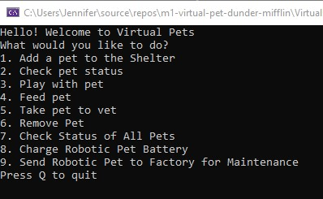

Virtual Pet
Designed console application, working with a team, that lets users create and interact with their own virtual pets. C#, Visual Studio, Git, Github, GitBash, TDD, OOP
Based in Cleveland, Ohio, USA, I am a graduate of the We Can Code IT coding bootcamp, where I learned C# and fullstack web development. I am a career changer wih 15 years experience working in education, most of which was as an online teacher, working remotely from home. I have done content development - which was creating online lessons using html. I trained other teachers in educational technology. I also have experience as a group facilitator and event organizer. I am problem solver and out of the box thinker. I enjoy crafting solutions while coding and I thrive when learning new things.
C# • .NET Core • Active Server Pages / ASP.net • JavaScript • Flexbox • MVC • HTML • CSS • Grid • TDD • Agile (Scrum) • Object Oriented Programming (OOP) • AJAX • JSON • React • Restful APIs • Responsive Design / Mobile • Relational Databases / MS SQL • Source Control / GitHub Visual Studio
Microsoft Office Suite • G Suite • Adobe Creative Suite • IQity Learning Management System • Audacity • Screencast-O-Matic • Skype • Zoom • Collaborate
extensive remote working experience • conversational Spanish, French and Swahili • online educator • team facilitator
Examples of my software development work.
Designed console application, working with a team, that lets users create and interact with their own virtual pets. C#, Visual Studio, Git, Github, GitBash, TDD, OOP
Designed console application that lets users play flashcards and matching games to learn new vocabulary. C#, Visual Studio, Git, Github, GitBash, TDD, OOP
Utilized knowledge of C# to solve various puzzles with loop methods. C#, Visual Studio, Git, Github, GitBash